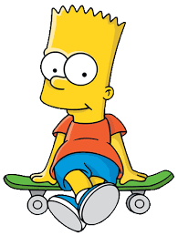

«Сі́мпсони» (англ. «The Simpsons») — американський анімаційний сатиричний серіал, створений Меттом
Ґрейнінґом
для компанії «Fox». Мультсеріал — сатирична пародія на стиль життя середнього класу США, втілена в сім'ї
Сімпсонів, яка складається з Гомера, Мардж, Барта, Ліси та Меґґі. Більшість подій відбуваються у вигаданому
містечку Спрінґфілді (англ. Springfield). Шоу висміює численні аспекти життя людей, американську культуру,
суспільство, навіть американське телебачення.

Гомер Джей Сімпсон (народився 12 травня 1956) [40] — чоловік зі Спрінгфілда . Він є чоловіком Мардж Сімпсон
і
батьком Барта , Лізи та Меггі Сімпсон . Гомер має надлишкову вагу (як кажуть, 239 фунтів) [41] , він ледачий
і
часто не знає навколишнього світу.
- “D'oh!”
- “Why you little...!”
- “Woo-hoo!”

Бартолом’ю ДжоДжо «Барт» Сімпсон (народився 23 лютого або 1 квітня 1980 року) [7] — пустотлива, непокірна,
незрозуміла, руйнівна та «потенційно небезпечна» найстарша дитина сімейства Сімпсонів у Сімпсонах .
- “Ay Caramba!”
- “Eat my shorts!”
- “I didn't do it!”

Ліза Марі Сімпсон (народилася 9 травня 1983) [9] — старша донька та середня дитина родини Сімпсонів і одна з
двох тритагоністів (разом з Мардж) серіалу «Сімпсони ».
- "If anyone wants me, I'll be in my room."
- "Shut up, Meg."
- “The truth must be told.”